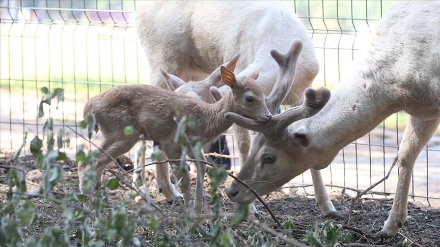

Beyaz geyik, kızıl geyiğin nadir görülen albinizm veya genetik varyasyon sonucu tamamen beyaz kürke sahip bireyleriyle tanımlanan özel bir formudur; Avrupa mitolojisinde kutsallık, saflık ve ulaşılmazlık sembolü olarak yer alırken, doğada dikkat çekici görünümü nedeniyle hem avcıların hem de koruma çalışmalarının odağı olmuştur; erkekleri dallı boynuzlarıyla gösterişli bir yapıya sahipken dişiler boynuzsuzdur, sürüler halinde yaşar ve otçul beslenir; ortalama 15–20 yıl ömürleri vardır ve 200 kg’a kadar ağırlığa ulaşabilirler; beyaz kürkleri sayesinde özellikle ormanlık alanlarda kolay fark edilirler, bu da onları ekolojik açıdan daha hassas hale getirir; Türkiye’de doğal olarak görülmese de Avrupa’nın bazı bölgelerinde koruma altına alınmış popülasyonları vardır ve kültürel açıdan efsanelerde “ulaşılamayan av” olarak simgesel bir öneme sahiptir.